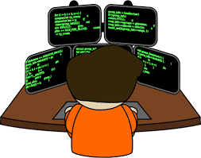

Um programador é alguém que escreve códigos de computador para criar programas, aplicativos ou sistemas de software.
Os programadores também podem se envolver em diversas etapas do ciclo de vida do desenvolvimento de software, desde a concepção e o planejamento até a implementação, testes e manutenção contínua.
Eles precisam ter habilidades analíticas, lógicas e de resolução de problemas, além de conhecimento técnico em suas áreas de atuação.
Inovação tecnológica: Os programadores são os criadores por trás de novos softwares e aplicativos que impulsionam a inovação em diversas áreas, desde a saúde até a educação e o entretenimento.
Eficiência e automação: Eles desenvolvem ferramentas e sistemas que automatizam processos, aumentando a eficiência e reduzindo custos em empresas e organizações.
Facilitam a comunicação: Programadores desenvolvem aplicativos e plataformas que facilitam a comunicação e colaboração entre pessoas em todo o mundo, contribuindo para um mundo mais conectado.